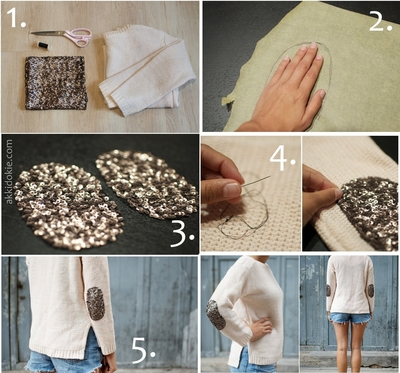
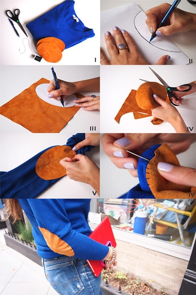

Patch Up an Awkward Hole
Oh great, there goes another one of your favorite pieces of clothing right? Not so fast! Not only can we get it looking almost as good as new, it poses an opportunity to be enhanced, redefined and personalized.
Photo credits to Imani Clovis on Unsplash
Patchwork can allow the modification of any article of clothing for the better, be it in need of repair or in great shape! One may select embroidered patches or fabrics that interest them and use them to cover up those undesired gaps in your garments. There are also means of creating a patch-like area on a garment using beads, sequins and stitches!


Photo credits to Pretty Designs
When repairing an actual tear or hole in a garment, it is important to prepare it before attaching a patch:
- If possible, carefully trim off fraying strands on the edges of the hole. Reshape the hole if it may aid the application of a patch.
- Prevent further fraying around the hole by stitching about 0.5cm away from the edges and around the hole.
- To further prevent fraying, try out a button or stitch as described in the Sewing page.